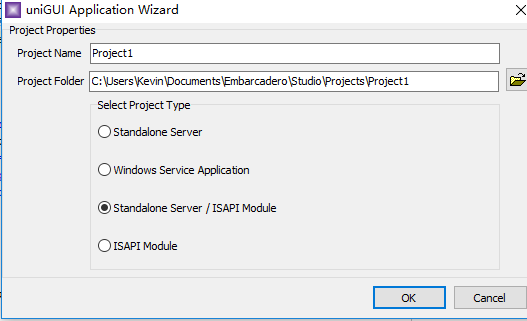

uniGUI v1.0.0.1397(带注册机).rar在delphi10.2安装
提示:安装包可以自行在网上搜索下载，或者联系我获取都可以
这里讲下怎样安装的方法：
1）执行FMSoft_uniGUI_Complete_-_Professional_Edition_v1.0.0.1397_gopaysoft.com.exe，默认是安装到C：，但可以选择其它盘。
2）打开安装路径D:\Lib\FMSoft\Framework\uniGUI\uniGUI_D10_2_Tokyo_PlusGroup.groupproj下这个文件，设置好bpl存放的路径，默认是C:\Users\Public\Documents\Embarcadero\Studio\19.0\Bpl\下
3）然后编译所有的bpl
4）安装UNIGUI运行包，component---install packages---add---选择C:\Users\Public\Documents\Embarcadero\Studio\19.0\Bpl\里面uSynEdit_D2021.bpl，uniGUI25mdcl.bpl，uniGUI25dcl.bpl，uniGUI25Chartdcl.bpl。
5）创建程序，新建-其他-选择UNIGUI for delphi下的 application Wizard，然后选择项选择第三个，点击ok，如图

6）添加按钮，uniButton，随便写一个click事件，保存运行，在浏览器中打开localhost:8077查看效果8077是默认端口，可以自行在serverMoudle界面属性里面自行修改，包括网页显示的标题。
到这里简单的uniGUI安装和运行就结束了。